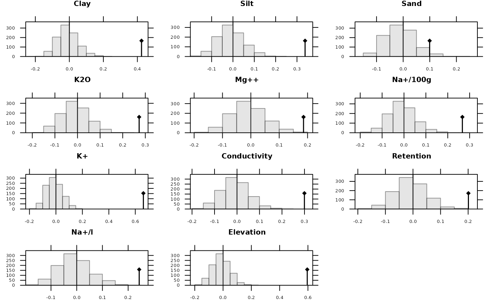

Moran's I and Geary'c randomization tests for spatial and phylogenetic autocorrelation
gearymoran.RdThis function performs Moran's I test using phylogenetic and spatial link matrix (binary or general). It uses neighbouring weights so Moran's I and Geary's c randomization tests are equivalent.
Usage
gearymoran(bilis, X, nrepet = 999, alter=c("greater", "less", "two-sided"))Arguments
- bilis
: a n by n link matrix where n is the row number of X
- X
: a data frame with continuous variables
- nrepet
: number of random vectors for the randomization test
- alter
a character string specifying the alternative hypothesis, must be one of "greater" (default), "less" or "two-sided"
Details
bilis is a squared symmetric matrix which terms are all positive or null.
bilis is firstly transformed in frequency matrix A by dividing it by the total sum of data matrix :
$$a_{ij} = \frac{bilis_{ij}}{\sum_{i=1}^{n}\sum_{j=1}^{n}bilis_{ij}}$$
The neighbouring weights is defined by the matrix \(D = diag(d_1,d_2, \ldots)\) where \(d_i = \sum_{j=1}^{n}bilis_{ij}\).
For each vector x of the data frame X, the test is based on the Moran statistic \(x^{t}Ax\) where x is D-centred.
References
Cliff, A. D. and Ord, J. K. (1973) Spatial autocorrelation, Pion, London.
Thioulouse, J., Chessel, D. and Champely, S. (1995) Multivariate analysis of spatial patterns: a unified approach to local and global structures. Environmental and Ecological Statistics, 2, 1--14.
Author
Sébastien Ollier sebastien.ollier@u-psud.fr
Daniel Chessel
See also
moran.test and geary.test for classical versions of Moran's test and Geary's one
Examples
# a spatial example
data(mafragh)
tab0 <- (as.data.frame(scalewt(mafragh$env)))
bilis0 <- neig2mat(mafragh$neig)
gm0 <- gearymoran(bilis0, tab0, 999)
gm0
#> class: krandtest lightkrandtest
#> Monte-Carlo tests
#> Call: as.krandtest(sim = matrix(res$result, ncol = nvar, byrow = TRUE),
#> obs = res$obs, alter = alter, names = test.names)
#>
#> Number of tests: 11
#>
#> Adjustment method for multiple comparisons: none
#> Permutation number: 999
#> Test Obs Std.Obs Alter Pvalue
#> 1 Clay 0.42436873 7.300160 greater 0.001
#> 2 Silt 0.33796853 5.764217 greater 0.001
#> 3 Sand 0.09947991 1.851271 greater 0.052
#> 4 K2O 0.27277951 4.815459 greater 0.001
#> 5 Mg++ 0.18577104 3.132506 greater 0.003
#> 6 Na+/100g 0.26673592 4.513585 greater 0.001
#> 7 K+ 0.66106701 11.345941 greater 0.001
#> 8 Conductivity 0.29969555 5.097795 greater 0.001
#> 9 Retention 0.20099816 3.611807 greater 0.002
#> 10 Na+/l 0.24300034 4.256713 greater 0.001
#> 11 Elevation 0.59526831 9.734005 greater 0.001
#>
plot(gm0, nclass = 20)

if (FALSE) {
# a phylogenetic example
data(mjrochet)
mjr.phy <- newick2phylog(mjrochet$tre)
mjr.tab <- log(mjrochet$tab)
gearymoran(mjr.phy$Amat, mjr.tab)
gearymoran(mjr.phy$Wmat, mjr.tab)
if(adegraphicsLoaded()) {
g1 <- table.value(mjr.phy$Wmat, ppoints.cex = 0.35, nclass = 5,
axis.text = list(cex = 0), plot = FALSE)
g2 <- table.value(mjr.phy$Amat, ppoints.cex = 0.35, nclass = 5,
axis.text = list(cex = 0), plot = FALSE)
G <- cbindADEg(g1, g2, plot = TRUE)
} else {
par(mfrow = c(1, 2))
table.value(mjr.phy$Wmat, csi = 0.25, clabel.r = 0)
table.value(mjr.phy$Amat, csi = 0.35, clabel.r = 0)
par(mfrow = c(1, 1))
}
}